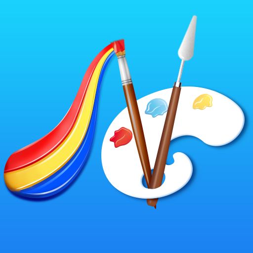

---
layout: cn
title: 欢迎
---

这是一款用3D技术模拟油画的强大软件。它从油画绘画工具以及绘画过程等各方面模拟油画的创作过程，旨在为大家提供一个更接近真实的专业的油画平台。
用户手册
FAQ
- 如何给画笔蘸取颜料？
有两种解决方法：
- 使用调色板（调色板可以定制各种不同的颜色）。
- 使用颜色或模式选择器直接在油画表面提取。
第一种方法可以提供数以千计的单一颜料，而第二种方法能够提供规模庞大的混合颜料以及混合颜料的模式。
-
如何产生厚涂的效果？
最重要的是保持颜料的厚度，这意味着你不能用松节油去稀释它，而是尝试着去绘制厚一点的层，有下面几种方法可以实现：
| 工具 |
描述 |
| 颜料管 |
绘制最厚的层 |
| 画刀 |
启用画刀，然后以最大的压力填充画刀的颜料，然后绘制。如果要重复使用，你可以启用“自动重置”。 |
| 画笔 |
和画刀的使用方法类似。 |
- 我的画布上有太多的颜料，怎么能去除它？
使用画刀，将之角度旋转至大于45°，并使用向后的绘画方向，可将其删除。
使用画笔，您可以打开“自动清洁”选项并反复绘制。
- 如何调制渐变色？
您可以在混合模式（旋转角度小于45°）中使用画刀以混合两种或更多种颜色。
- 如何产生鬃毛痕迹？
为了产生刷毛痕迹，刷子中装载的液体颜料的量是非常重要的。您需要先在“调色板”上准备颜色 ，然后使用拾取手势在“绘画工具”中加载颜色，然后用最大的压力在表面上绘制颜色以形成薄薄的一层。
- 如何准备背景？
背景应该是非常薄的一层。解决方法是使用更多的湿颜色。为了准备湿的颜色，可以使用两种工具：湿画模式和松节油。一旦准备好湿的颜色，您可以使用刀或刷来打薄层。“自动重置”选项对重复混合操作非常有帮助。